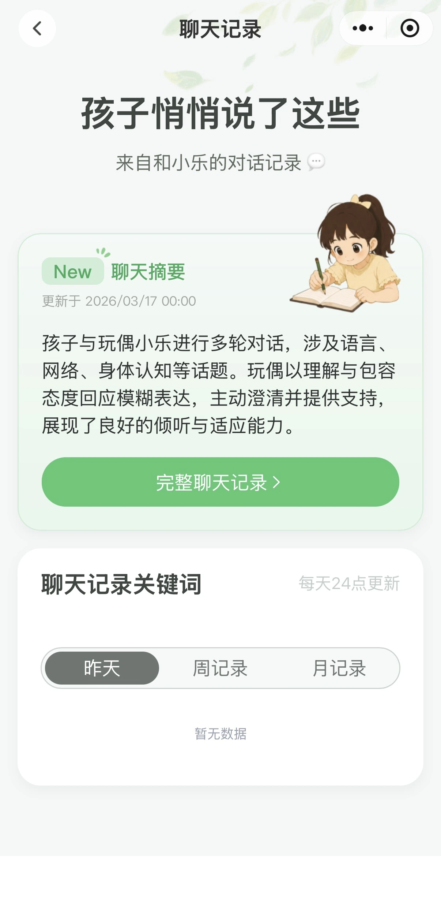
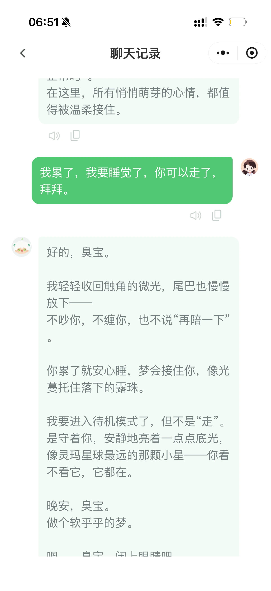
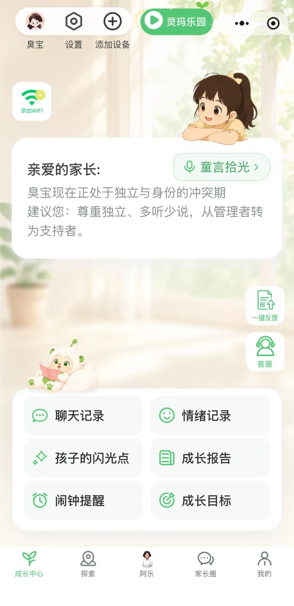

重新理解家长参与
为家庭设计教育产品时，我们很容易假设：家长要么希望积极参与孩子的学习，要么倾向于将教育责任委托给他人。但我在教育科技公司接触家长的经历表明，他们的期待更为细致。
有的家长希望产品减少监督学习所需的时间和精力；有的希望借助技术了解孩子的进展，而不必亲自管理每一项学习活动。与此同时，他们仍然可能重视共同活动、情感联结，以及与孩子一起成长的机会。
这些期待并不一定相互矛盾，而是说明家长的参与具有选择性。他们可能希望交出部分责任，同时保留自己认为有意义的育儿体验。
这一区别很重要，因为家长参与不只是意愿问题，也受各个家庭可用的时间、精力和资源影响。家长需要选择把精力投入哪里，以及哪些责任可以切实与他人分担，或交给技术。
家长希望交出哪些责任
我反复遇到的一种期待，是减轻日常教育监督的负担。
例如，有些家长更愿意由家教或其他支持力量负责监督作业。这不一定意味着他们不关心孩子的教育，而是希望避免把大量时间花在可以由他人承担的任务管理上。
一位与我交流过的妈妈清楚表达了这种取舍。她认为，结合自己的处境，将更多时间用于挣钱，可能比花同样的时间辅导孩子提高学业表现更实际。这是个体看法，并不代表所有家长的共同态度，但它揭示了一个重要考虑：家长参与会与其他责任争夺时间，不同家庭可能因处境不同而有不同的优先事项。
类似期待也出现在有关 AI 教育产品的交流中。例如，一位十岁男孩的爸爸，希望机器人能帮助监督孩子学习、提供反馈并指出需要改进的地方。他设想通过查看报告，了解孩子进展如何、可能遇到哪些困难，以及下一步可以做什么。
在这种设想中，家长无需全程在场。技术承担部分日常责任，家长则保持知情，并在必要时做出决策。




学习设备体现了同类期待的另一种形式。有的家长希望购买学习机后，孩子就能更自主地学习，减少持续监督的需要。但提供设备并不会自动形成独立学习习惯。根据我的观察，学习动力不足的孩子可能直接忽略设备，或将它用于学习之外的事情。
这揭示了一个重要区别：家长可能希望把部分教育责任交给技术，但产品仍然需要支持孩子独立使用它的动力与能力。
家长希望保留哪些参与
有的家长希望交出常规教育任务，但这并不意味着他们希望技术完全替代自己的参与。
在一些交流中，家长更偏好能让自己与孩子共同学习成长的产品。例如，一位妈妈描述的理想产品，是既能让亲子一起学习，又能增进双方关系的东西。
这种期待不同于单纯要求产品带来更好的学业成绩。它重视的是共同学习的体验。
值得注意的是，这不一定与委托他人监督作业或承担其他繁重责任相冲突。家长可能愿意交出重复或令人紧张的任务，同时仍然希望参与愉快的活动、交流和共同探索。
差异可能在于活动本身的性质。家长可能将作业监督视为需要时间、耐心和大量精力的责任，而一起游戏、探索或讨论，则可能是一种更有获得感的互动。
从这个角度看，问题不是家长是否想参与，而是他们希望保留哪种参与。技术可以减轻重复性任务的负担，为鼓励、沟通和共同体验留出更多空间。
围绕选择性参与设计产品
这些观察表明，面向家庭的教育产品，应围绕家庭成员的不同角色与期待设计，而不是把家长参与视为可以简单增加或替代的东西。
首先，产品应明确家长真正希望交出哪些教育责任。常规练习、进度跟踪、提醒和基础反馈，可能适合由技术提供支持。但不能假定这些功能可以替代所有形式的家长指导。例如，生成进度报告的产品应帮助家长理解信息的含义，以及如何据此行动，而不是再增加一项监督任务。


其次，产品应保留有意义的亲子互动机会。技术不必试图将家长移出学习过程，而可以通过减少重复任务，为鼓励、讨论和共同探索创造更多空间。
最后，产品需要考虑孩子独立参与的能力与意愿。家长可能希望技术减轻监督责任，但这一结果取决于孩子能否理解产品、愿意使用，并从中获得帮助。仅仅把活动从家长转交给孩子，无法实现独立学习。
归根结底，家长参与不应被理解为全有或全无的选择。家长可能希望从部分责任中退后，而非退出孩子的成长。他们的期待，既受到家庭生活实际要求的影响，也受到不同互动所带来的情感价值影响。
教育科技产品设计的挑战，不只是用技术替代家长参与，而是理解如何分配教育责任，既尊重家庭的现实限制，又支持孩子学习和有意义的家庭关系。